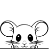
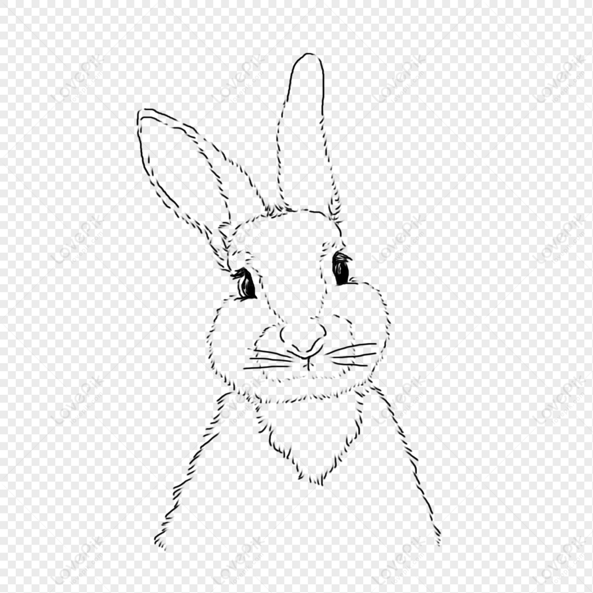

Articles of Interest
Below are several articles that we at TPS have found to be very interesting. Perhaps they will appeal to you too.
 Cats: The Cuddle Creatures
Cats: The Cuddle Creatures
Article by Katherine Katz (2015/07/18)
Summary: Katherine explores the positive pyscological and physiological benefits of cat ownsership. In this article, she explains the emotional, neuro-biochemical, physiological changes that bonding with a cat manifests within the human body, and why they occur.
Read the complete article here.
 Dogs: The Nose Knows
Dogs: The Nose Knows
Article by Doug Dachshund (2002/12/03)
Summary: Though published in 2002, this publication is still the go-to resource concerning canine's seemingly super-natural sensing abilities. In it, Doug cetgorizes these abilities, asserts and explains how they are not super-natural, and how they are observed to change from breed to breed.
Read the complete article here.

Mice: More Intelligent that You Might Think
Article by Micahela Meeker (2023/11/17)
Summary: Behold the lowly mouse! Long maligned as a scourge of humanity's existance. However, in her most recent publication, Micahela Meeker takes the reader on an historical journey to uncover the true nature of mice - their behaviour, their motivations, and their effect on humanity through the ages.
Read the complete article here.

Rabbits: More Intelligent that You Might Think
Article by Micahela Meeker (2023/11/17)
Summary: Behold the bouncy rabbit! Long maligned as a scourge of humanity's existance. However, in her most recent publication, Micahela Meeker takes the reader on an historical journey to uncover the true nature of mice - their behaviour, their motivations, and their effect on humanity through the ages.
Read the complete article here.